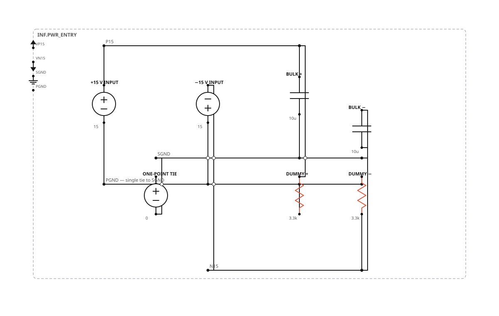
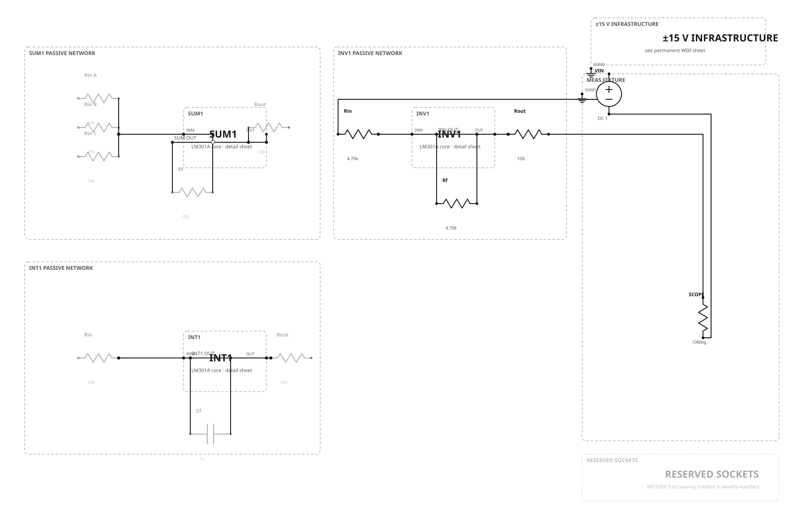
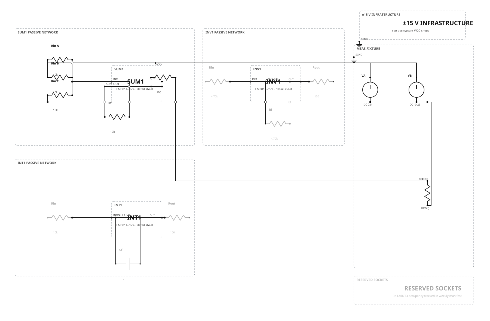
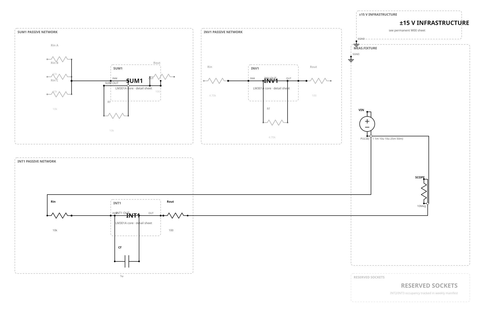
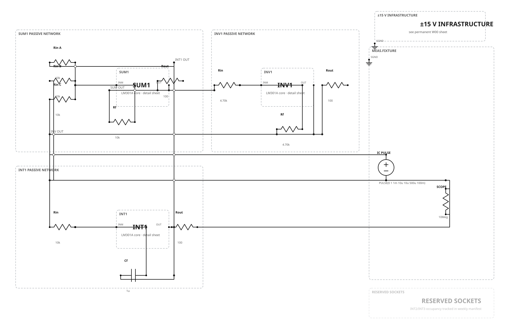
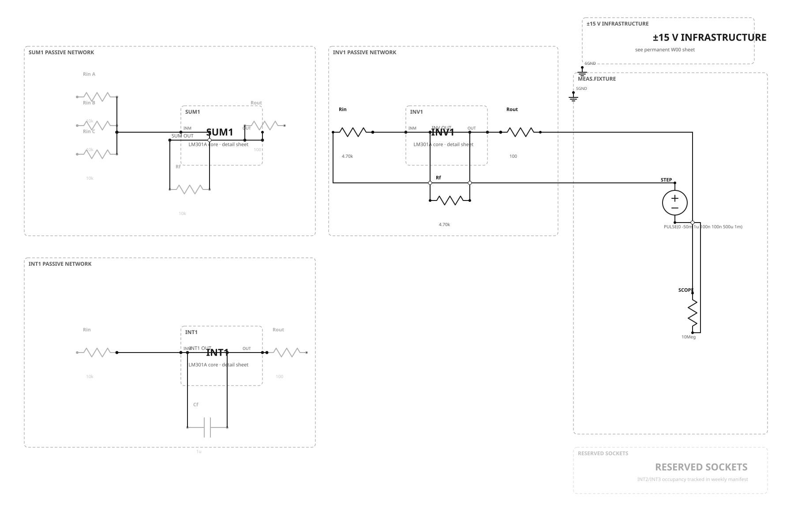
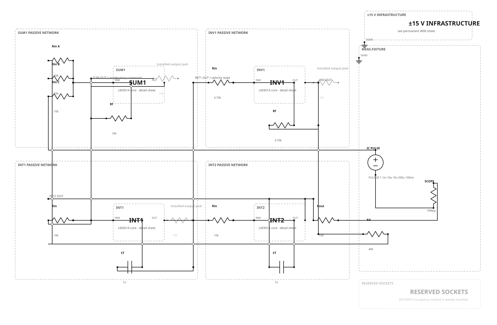
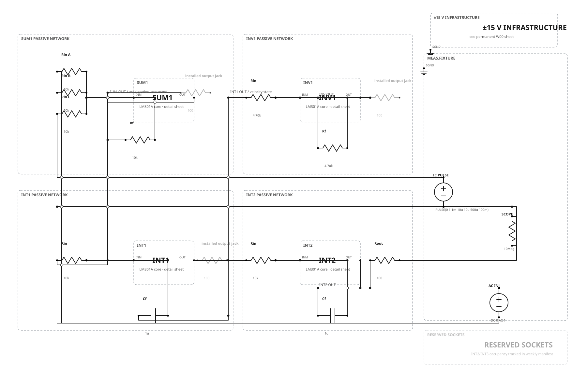

capstone.html.Week 0 · Permanent infrastructure
External isolated, regulated, current-limited ±15 V supply boundary; one declared PGND–SGND tie; bulk bypassing; symmetric temporary commissioning loads.

Week 1 · Computing core
Install and test INV1, SUM1, and INT1 separately. The unselected channels remain installed but inactive. Each LM301A core has a companion detail sheet for its hidden supply, bypass, and compensation wiring.
{kind=link}



Week 2 · First-order feedback loop
Approved correction: SUM1 → INV1 → INT1.
This extra inverter is required for the requested stable equation. With τ = 10 ms, the loop implements dx/dt = −x/τ; a declared pulse fixture creates a repeatable initial condition.

Week 3 · Compensation characterization
First, reproduce the Figure 3.1 unity-inverter reference with two explicit compensation capacitors. Then restore the cumulative W02 loop and repeat the comparison on INT1. The configurations are separate; no drawing silently combines capacitors.
{kind=link}

{kind=link}
Week 4 · Damped second-order system
INT2 is populated. The run configuration realizes x″ + (0.2/τ)x′ + x/τ² = 0, τ = 10 ms. The separate measurement configuration sets damping to zero and inserts an explicit zero-DC series AC source; this avoids the incorrect claim that gain alone moves an ideal two-integrator loop onto the jω axis.
Corrected review revision: SUM1.OUT and INT1.OUT now use separate vertical channels 370 schematic units apart; inactive output-jack branches are visually subdued.
{kind=link}


Recommended values and claim boundary
Values marked “proposed” are engineering choices for this teaching build, not historical claims.
| Function | Value | Status |
|---|---|---|
| INV1 input / feedback | 4.70 kΩ / 4.70 kΩ, 1% | verified ratio; proposed build value |
| SUM1 inputs / feedback | 10 kΩ / 10 kΩ, 1% | proposed |
| INT1, INT2 | 10 kΩ, 1 µF film, 35 V | approved 10 ms scale |
| Normal LM301A compensation | 30 pF C0G | TI verified |
| W03 comparison | 12 pF / 220 pF C0G | Roberge Figure 3.1 cases |
| Local bypass per channel | 0.1 µF, 50 V | Roberge verified |
| Output-jack isolation | 100 Ω | proposed |
| W04 damping element | 40 kΩ in series with 10 kΩ | derived Kd = 0.2 |
Canonical authority: circuits/weeks/w00_04/graph.json. Decisions: production decisions. Deferred project retained: a separate modern low-voltage redesign; it is not allowed to silently replace the historical ±15 V build.